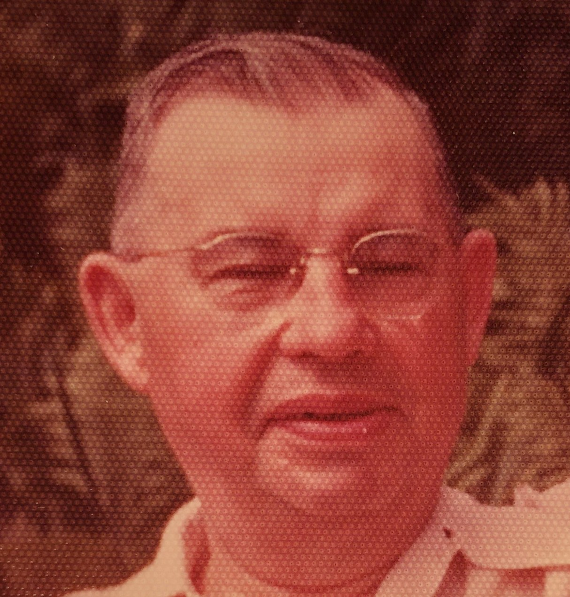

Stanley immigrated alone to the United States in 1906 at age 18. He left Poland because he was conscripted by the Russian army. His section was partitioned by Russia. His birth certificate says he was Russian, but he identified as Polish. He immigrated to the United States and quickly joined the U.S. Marines.
“It wasn’t the military service he was avoiding, it was Russia.” - Joan Schmitt
After his military service, he worked for an electrical company. He was called an electrical engineer, despite not having a degree.